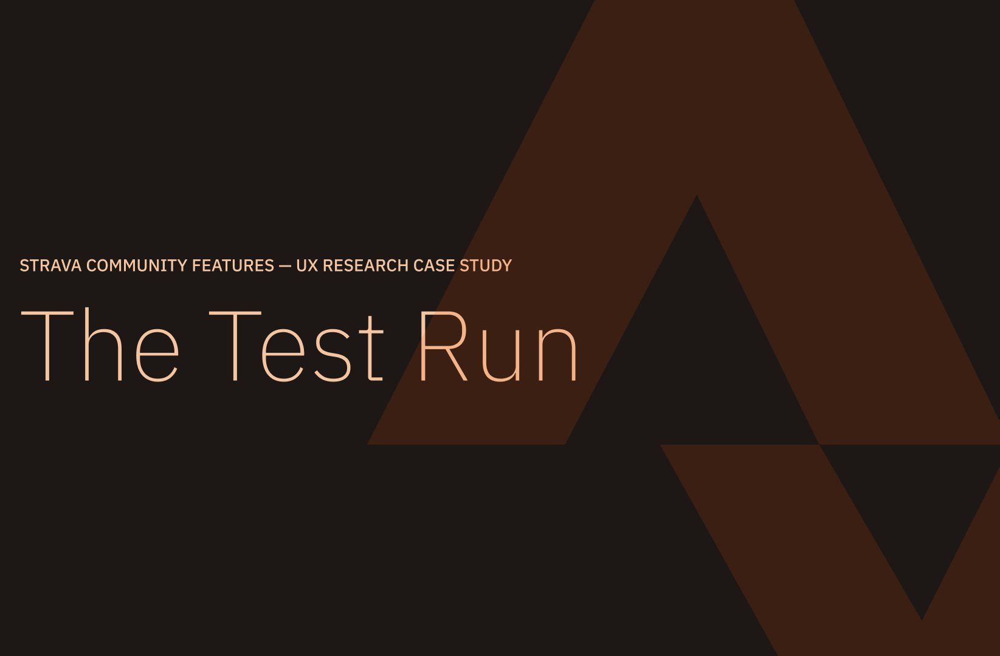

A multi-phase qualitative research project investigating why Strava's community and group features go underused, uncovering structural and communication breakdowns that limit discovery, coordination, and long-term engagement.
I'm a daily Strava user, and from a product perspective, I'm consistently impressed with how joyful and functional the app is at fitting into my routines. In Fall 2025, backed by my own engagement with community running and my college run club, I approached the app with curiosity and started asking a question: why isn't Strava thought of as integral to how runners discover, coordinate, and sustain group workouts? At the time of my research, the community features were hidden, underused, and full of friction. I asked why, through conversations with real users, and let that research point toward recommendations.
Read my multiphase qualitative research report below: